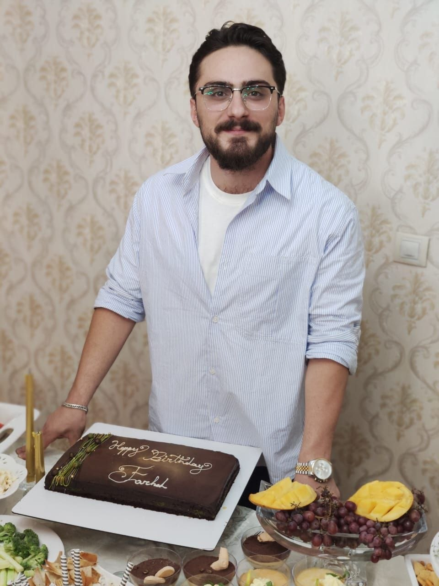

Farhad Amani

Un jeune homme qui aimait la vie
Farhad Amani avait 25 ans et vivait à Punak, à Téhéran.
Ceux qui le connaissaient décrivent un jeune homme dont la vie ne se limitait pas au travail et à la routine quotidienne.
Les livres occupaient une place importante dans sa vie et la lecture n'était pas pour lui un simple passe-temps. Il aimait également la musique et jouait de plusieurs instruments.
Il pratiquait régulièrement du sport et essayait de trouver un équilibre entre son travail, ses passions personnelles et ses projets d'avenir.
La boulangerie, son métier et son avenir
Farhad travaillait à la boulangerie Roastar, dans le centre commercial Sana.
Il prenait son métier très au sérieux. Il avait progressé professionnellement et venait récemment d'obtenir une promotion.
Farhad avait également des projets très précis pour son avenir.
Il voulait perfectionner, à un niveau professionnel supérieur, les compétences qu'il avait acquises au prix de nombreux efforts.
Ses proches le décrivent comme quelqu'un de déterminé, qui planifiait chaque nouvelle étape de sa vie et travaillait pour atteindre ses objectifs.
Le 8 janvier 2026
Le 18 Dey, correspondant au 8 janvier 2026, Farhad quitta son domicile.
Commencèrent alors pour sa famille de longues et difficiles journées sans aucune nouvelle.
Ils suivirent chaque piste. Ils se rendirent partout où ils pensaient pouvoir obtenir une information sur lui.
Les heures passèrent, puis les jours. Mais aucune réponse ne venait.
Pendant tout ce temps, sa famille resta suspendue entre l'inquiétude et l'espoir, sans savoir ce qui était arrivé à leur fils.
Deux semaines de recherches
Ces recherches prirent finalement fin environ deux semaines plus tard.
La famille apprit alors que le corps de Farhad avait été identifié à Kahrizak et se rendit sur place pour le récupérer.
Quelques jours auparavant encore, Farhad travaillait dans sa boulangerie, préparait son projet de formation professionnelle, lisait des livres et parlait de ce qu'il voulait accomplir dans les années à venir.
Désormais, il n'était plus auprès de ceux qu'il aimait.
Derrière son nom, une vie
Ce qui ressort de la vie de Farhad, ce sont avant tout ses nombreuses passions et ses efforts constants : les heures qu'il consacrait à la lecture, le temps qu'il donnait à l'apprentissage de la musique et son désir de progresser dans son métier.
Farhad faisait partie de ces jeunes qui construisent leur vie peu à peu, avec persévérance.
Ses collègues de Roastar se souviennent de lui derrière le comptoir de la boulangerie.
Ses amis se souviennent de leurs conversations sur les livres et sur tous les projets qu'il avait pour l'avenir.
L'histoire de Farhad Amani n'est pas seulement l'histoire du jour où il a perdu la vie.
C'est aussi l'histoire d'un jeune homme qui était connu pour son travail, son amour de l'art, de la lecture et ses rêves personnels.
Sa vie s'est arrêtée au milieu de ces journées ordinaires et bien remplies.
POUR PERFECTIONNER SON SAVOIR-FAIRE EN BOULANGERIE.
IL N'EN AURA PAS EU LE TEMPS.
Traduction française à partir du récit original publié en persan.
Sources citées par Narrata : témoins, proches et personnes disposant d'informations de première main ; IranWire.
messages@visages-iran.org